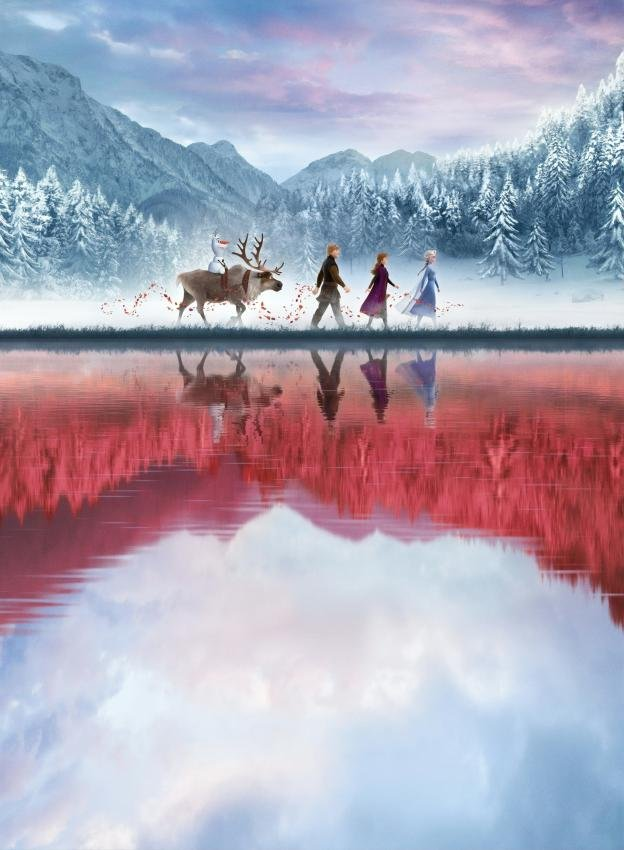

Frozen is a 2013 American 3D computer-animated musical fantasy film produced by Walt Disney Animation Studios and released by Walt Disney Pictures. [5] The 53rd Disney animated feature film, it is inspired by Hans Christian Andersen's 1844 fairy tale "The Snow Queen".[6] It tells the story of a fearless princess who sets off on a journey alongside a rugged iceman, his loyal reindeer, and a naive snowman to find her estranged sister, whose icy powers have inadvertently trapped their kingdom in eternal winter.
Frozen underwent several story treatments before being commissioned in 2011, with a screenplay written by Jennifer Lee, who also co-directed with Chris Buck. The film features the voices of Kristen Bell, Idina Menzel, Jonathan Groff, Josh Gad, and Santino Fontana. Christophe Beck was hired to compose the film's orchestral score, while Robert Lopez and Kristen Anderson-Lopez wrote the songs.
Frozen premiered at the El Capitan Theatre in Hollywood, California, on November 19, 2013,[7] had a limited release on November 22 and went into general theatrical release on November 27. It was met with praise for its visuals, screenplay, themes, music, and voice acting; some film critics consider Frozen to be the best Disney animated feature film since the studio's renaissance era.[8][9] The film also achieved significant commercial success, earning $1.280 billion in worldwide box office revenue, including $400 million in the United States and Canada and $247 million in Japan. It went on to surpass Toy Story 3 (which was also distributed by Disney) as the highest-grossing animated film at the time as well as the highest grossing musical film before being surpassed by the remake of The Lion King in 2019; it also ranks as the 16th highest-grossing film of all time, the highest-grossing film of 2013, and the third highest-grossing film in Japan. It was also the highest-earning film with a female director in terms of US earnings, until surpassed by Warner Bros. Pictures' Wonder Woman. [10] With over 18 million home media sales in 2014, it entered the list of best-selling films in the United States. By January 2015, Frozen had become the all-time best-selling Blu-ray Disc in the United States.[11]
Frozen won two Academy Awards for Best Animated Feature and Best Original Song ("Let It Go"),[12] the Golden Globe Award for Best Animated Feature Film,[13] the BAFTA Award for Best Animated Film,[14] five Annie Awards (including Best Animated Feature),[15] two Grammy Awards for Best Compilation Soundtrack for Visual Media and Best Song Written for Visual Media ("Let It Go"),[16] and two Critics' Choice Movie Awards for Best Animated Feature and Best Original Song ("Let It Go").[17] An animated short sequel, Frozen Fever, premiered on March 13, 2015,[18] an animated featurette titled Olaf's Frozen Adventure, premiered on November 22, 2017, and a feature-length sequel, Frozen II, was released on November 22, 2019.
